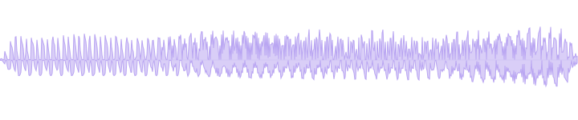
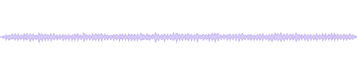

The voice family of the smpl
toolchain, grown into its own package: measure a voice like an instrument,
control a render like a score, and verify that what came out matches what
was asked for. vox tools read and write the same frames as smpl, so the
two toolchains sit in one pipe.
In plain words: load a recording, measure the voice
inside it (ear: pitch, formants, breathiness, vibrato), place it
on a six-axis coordinate (vector), and print the report. New to
terminal pipes? The smpl
site walks through them gently.
setup installs the shared inference engine and about
732 MB of base assets—not a person's voice. Bring a model you are
authorized to use. Open the cast guide.
Voices built with vox
Three exhibits, each rendered end to end by the commands
shown, from synthetic sources only (macOS say voices and
SuperCollider synthdefs; no recorded human source anywhere). They are
the site's examples and the toolchain's integration proof at once.
The choir
One written line becomes a sung choir with nobody
singing: the lyric verifier gates the words, the phoneme score places
each syllable on a melody, say speaks the syllables, the
WORLD vocoder imposes each note's exact pitch without chipmunking,
and the harmonizer stacks the result into a five-voice choir with a
drone under it.
Requires: macOS say,
plus smpl, the vox dispatcher, lyric, tongue, larynx, ear, and vector.
The exact install commands are in the sing card above.
$ say -v Fred --file-format=WAVE --data-format=LEI16@44100 -o spoken.wav "slow river carry me home"$ vox lyric review --delivery sustained --lines"slow river carry me home"--json$ vox lyric packet --delivery sustained --lines"slow river carry me home"| vox tongue compile-packet --melody"A2,C3,E3,D3,C3"--bpm 90 --score river.yaml
$ vox tongue sing --score river.yaml --out sung.wav
$ smpl read sung.wav | vox larynx harmonize --chord 0,3,7 --drone| smpl write choir.wav
$ smpl read choir.wav | vox ear describe | vox vector measure | smpl view
The measured numbers come from running
vox ear and vox vector on the finished
choir: HNR drops from 24.1 dB to 2.7 dB as five decorrelated voices
turn one clean tone into a textured stack.
Want to build this yourself, step by step?
The say-to-singing guide walks the whole
path in six commands.
The deep carrier
Two percussive lines are spat on a tempo grid by
say, then poured into a 55 Hz FM growl: a channel
vocoder makes the growl speak the words, the bass chain keeps the
sub and the consonant band, and a quiet dry-diction layer keeps the
words legible inside the bass.
Requires: macOS say,
ffmpeg, SuperCollider, the vox dispatcher, and
vox-carrier. Install the two vox pieces with
uv tool install git+https://github.com/chronick/vox#subdirectory=packages/vox
and uv tool install git+https://github.com/chronick/vox#subdirectory=tools/vox-carrier.
$ vox carrier verse --lines"Kick the pattern back to the top|Cut the deck and count to ten"\--body growl-55 --bpm 142 --out verse.wav
The honest part: pitch trackers
lie about harsh bass. On this voice the standard tracker reads
123.8 Hz; the bass-safe ruler (a low-floor pass that refuses to
trust it under 90 Hz targets) reads 96.0 Hz. That guard is a shipped
library function (vox-core), and the toolchain's own
tests pin it with a 55 Hz trap case.
The bodies
Five named carrier voices from the registry, each an
engine + parameters with a measured fingerprint written back into the
palette. All render offline through SuperCollider.
Requires: SuperCollider, the vox
dispatcher, and vox-bodies. Install the two vox pieces with
uv tool install git+https://github.com/chronick/vox#subdirectory=packages/vox
and uv tool install git+https://github.com/chronick/vox#subdirectory=tools/vox-bodies.
$ vox bodies render growl-55 --out growl.wav
growl-55
FM pair at a non-integer ratio: inharmonic, animal. The index
breathes on a slow LFO.
f0 86.6 Hz · HNR -0.3 dB · inharmonicity 0.64
subsaw-55

Three detuned saws with a falling resonant filter and a sub
sine an octave below. Massive, synthetic.
f0 55.1 Hz · HNR 2.7 dB · inharmonicity 0.14
throat-60

A giant's vocal tract: 60 Hz glottal impulses through three low
formants, breath colored by the same tract.
f0 60.2 Hz · HNR 2.4 dB · inharmonicity 0.21
fof-a-180
FOF/chant /a/ vowel at 180 Hz: the clean formant-sung reference
at human vocal-tract scale.
f0 180.1 Hz · HNR 30.3 dB · inharmonicity 0.002
fof-impossible
A formant stack no human tract can produce: vowel-like but
physically unreal. The otherworldliness dial.
f0 219.9 Hz · HNR 23.9 dB · inharmonicity 0.0
Every sound and number in this section regenerates
from docs/make_assets.sh,
which runs the pipelines shown and saves a
numbers.json receipt. The same
pipelines are pinned by the repo's test suites
(scripts/test-all.sh runs all thirteen).
The tools
Thirteen tools and a shared core, each in its own isolated install,
found by name (vox ear runs vox-ear; a
missing tool prints its exact install command):
castvoice conversion through a trained RVC model; the ML stack lives in its own engine venv
Under them:
vox-core (the bass-safe guarded F0 ruler + the shipped
SuperCollider synthdefs). The dependency matrix, Python-pin story, and
optional pieces are in
INSTALL.md.
In one pipe with smpl
vox tools speak the smpl frame protocol, so measurement, storage, and
reporting come from smpl while vox contributes the voice stages:
Requires: smpl, the vox dispatcher,
vox-ear, vox-vector, and vox-larynx.
Their exact install commands are in Install.
vox --help lists every tool with its install command.
The full dependency matrix (Python pins, optional extras, system
binaries, what degrades without them) is in
INSTALL.md.
MIT licensed.
Agent skills
Two installable skills let Codex or Claude Code drive the measured
workflows while the audio and final judgment stay yours: